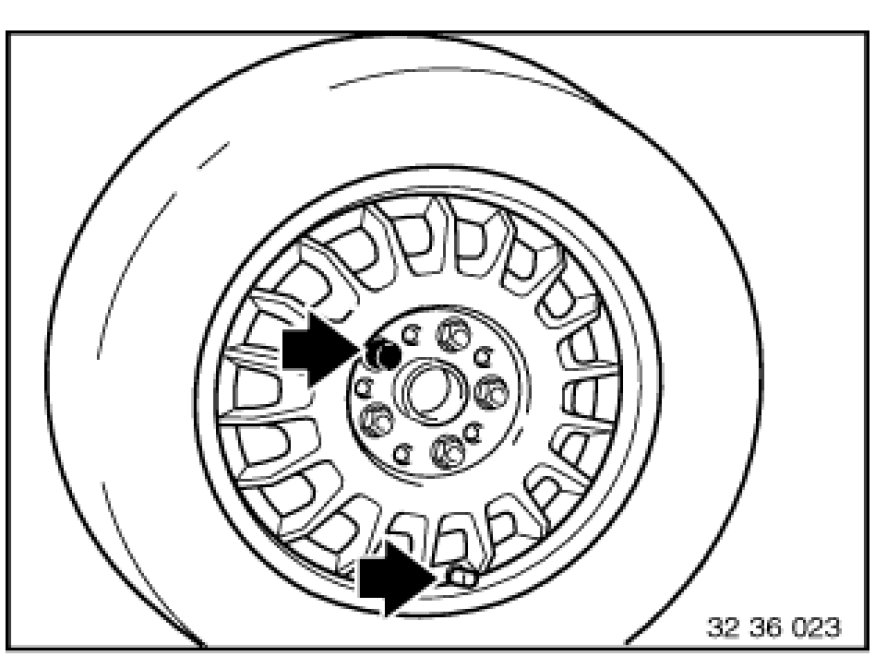
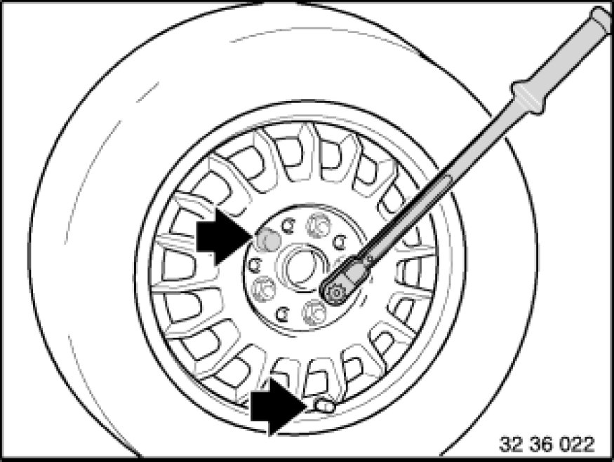

Subsequent Installation of Wheel-Bolt Lock
36 13 - Subsequent installation of wheel-bolt lock

Loosen wheel bolts.
Raise car so that wheel can be turned freely.
Release wheel studs to such an extent that the wheel can move freely on the wheel hub.
Turn wheel so that valve is face down.
Remove top wheel stud and insert wheel stud lock.

Possible play in wheel center and wheel weight could cause imbalance.
This imbalance is reduced to a minimum by installing the somewhat heavier wheel-bolt lock in the top wheel-bolt position.
In this position - wheel stud lock at top, valve at bottom - tighten wheel studs hand-tight in diagonal sequence.
Lower car and tighten wheel bolts crosswise.
Tightening torque 36 10 1AZ Wheels.